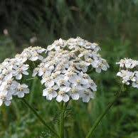
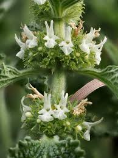

icelandic-moss

Iceland moss is used for treating of the mouth and throat, loss of appetite, common cold, dry cough, bronchitis, indigestion, fevers, lung disease, kidney and bladder complaints, and the tendency toward infection.
Even though mosses are known for thriving in harsh environments, they still need a lot of water, above-zero temperatures and sunlight in order to grow and expand. If it's too cold or too dry, they stay dormant and wait for better living conditions.
Birch

Both the leaves and branches can be used to treat sprains, strained muscles and headaches, and steaming the leaves can help clear sinus congestion. In the early spring, the buds of the birch can be infused in oil to make a topical salve for inflamed skin. Birch trees can also be tapped for their sap to make syrup. Birch buds have long been known to have healing properties. They treat diseases of the stomach and duodenum, and relieve inflammatory processes in the lungs and liver. Birch buds improve appetite. And birch water is also a source of Vitamin C, an antioxidant that stimulates collagen production and protects the body from UV rays. Sailors historically drank birch water to ward off scurvy, a Vitamin C deficiency that causes weakness, bleeding from the skin and gum disease.
In the spring picking new birch leaves for tea is easy as they are not hard to pick and dry. Birch leaves are said to be healing and good for general detox, arthritis and psoriases. Find whole birch leaves, spring or early summer, that have not been eaten by bugs. Pick them in a basket of some kind.
Yarrow
Popular in European folk medicine, yarrow contains flavonoids, plant-based chemicals that increase saliva and stomach acid to help improve digestion. Yarrow may also relax smooth muscle in the intestine and uterus, which can relieve stomach and menstrual cramps. Achillea millefolium (Yarrow) is a herbaceous plant of Greek origin noted to treat pneumonia, common cold, cough, and other respiratory disorders. The flowers and leaves are the core part used to prepare herbal tea that gains the world's recognition as medicinal tea. A tea made from the leaves was used for fevers and colds. The leaves can be crushed in your hand, mixed with water, and put on a sunburn. As a tea, Yarrow can be used to treat cold and flu-like symptoms, as well as mouth pain including phlegm, sore throat, inflamed gums or toothaches. Yarrow also aid in digestion, lowers blood pressure increases circulation, regulates menstrual cycle and eliminates excess water from the body (like diuretic).
The plant should look healthy, with the flowers completely or mostly open. It's okay if the lower leaves are dying back, but the upper leaves and blossoms should appear fresh. When making teas and tinctures to be taken internally, typically the flowering tops (leaves, stems, and flowers) are used.
Horehound
The chemicals in white horehound can thin mucus secretions, reduce spasms in the stomach and intestines, and decrease swelling (inflammation). One of the health benefits of horehound is that it works to relax muscles around your lungs and help support more relaxed and efficient breathing. This is important for obvious reasons - but very helpful for those suffering from breathing conditions or those with bronchitis or whooping cough. People take black horehound for treating nausea, vomiting, spasms, cough, and whooping cough. They also take it for relieving symptoms of nervous disorders, especially mild sleep problems. Black horehound is also used for increasing bile flow.
High time for harvesting horehound is in the fall, right after full flower as the seed clusters start to get stiff. However, the herb to be very effective even when harvested in the dead of winter. When harvesting, look for a plant that is a deep green and has life in it.